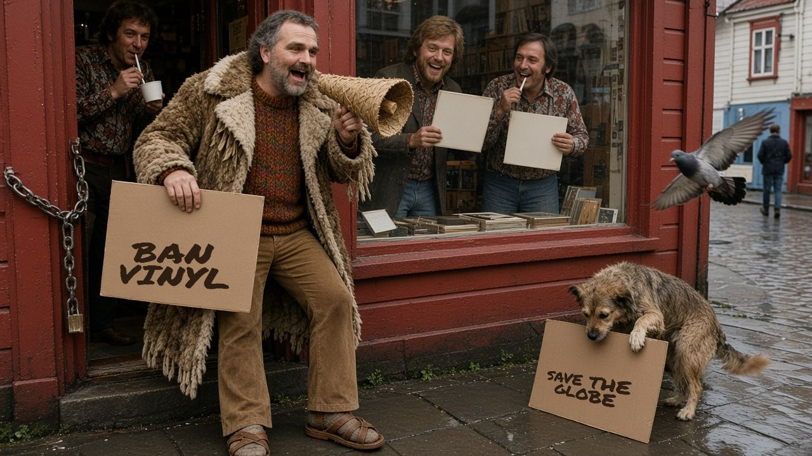
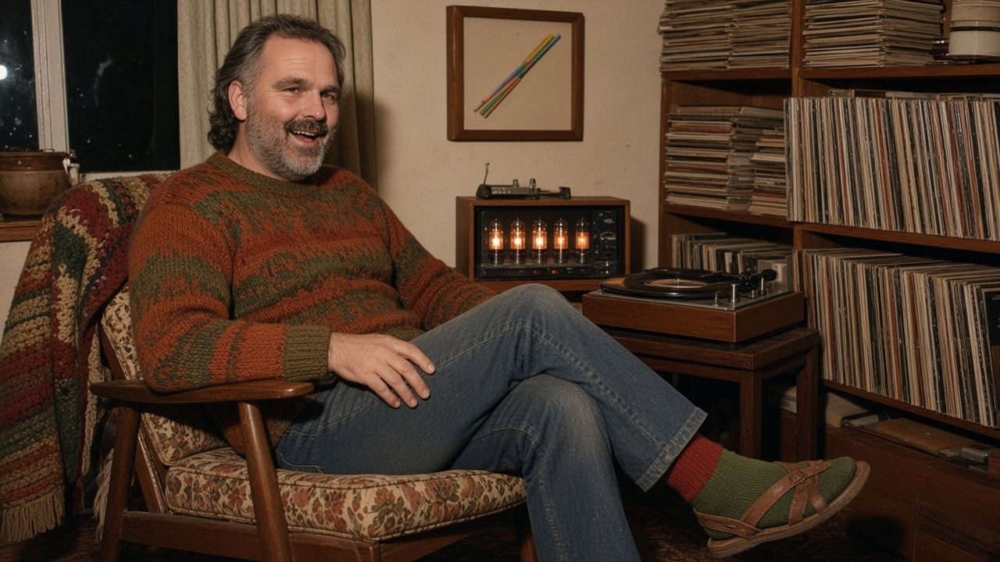

Vinyl desk · The interview ·
“We Don’t Need No Regulation”
Dagfinn Grønnvik of Bergen demanded vinyl records be banned to save the globe. He now owns 412 of them, and a framed plastic straw “for awareness.”

We met Dagfinn in his flat in Bergen, which now smells of valve amps and wet wool. A shaggy afghan coat hangs by the door, next to 412 records. Above the turntable, in a cheap wooden frame, is a single plastic straw. He offered us herbal tea in a jar.
Dagfinn, you wanted vinyl banned?
I did. Vinyl is just a plastic straw that plays music. I climbed onto a recycling bin outside Rillen in the rain and said so, through a megaphone made of oat husks. A pigeon left. Nobody else moved.
What were your demands?
Groove Surrender Stations. You hand the records in, they melt them into one environmentally neutral bench, and people sit on it and think about what they’ve done. Turntables would be reclassified as spinning carbon altars. Anyone caught humming a B-side would get three weekends of whale sounds on a solar-powered speaker that only works in July.
And Operation Silent Groove?
I went to the record fair at dawn and replaced every sleeve with a laminated poster of a sad polar bear. A dealer named Roald noticed first. He laughed so hard he had to sit down on a crate of Deep Purple. Then he pointed out that lamination is plastic. I had not… I had not thought of that.

“Vinyl is just a plastic straw that plays music.”
You protested outside the shop as well?
I chained myself to the door. BAN VINYL. SAVE THE GLOBE. The collectors stood in the window and held up records at me. A dog attended to the spare sign. The owner drank his coffee through a straw, which I thought was provocative.
And the café?
There were straws. I went in and took one out of a pensioner’s hand and told her it had killed nineteen turtles. Mrs. Halvorsen, seventy-nine, ex-sailor. She told me it was paper. I sniffed it. I confiscated it anyway. Paper comes from trees, and trees are people too.
How did that go down?
Someone dropped the needle on Paranoid by Black Sabbath. Fifty collectors started nodding in unison. I tried to cover my ears, but the bass came in through my sandals. I left on my bicycle.
And then?
I went home to calm down with a nature programme on the television. Then I noticed the set was mostly plastic, and it used more electricity than the record fair would in a month. The telephone is plastic. My sandals are plastic. The polar bear poster is plastic. The oat-husk megaphone is held together with plastic glue. I screamed into a reusable pillow.
Advertisement · fake

So you went back?
The next Saturday. Sunglasses, the afghan coat, cash. I bought a battered copy of The Wall. I told the shopkeeper it was for a protest art installation.
And now?
I have 412 records, a valve amplifier, and a framed vintage plastic straw from 1974, which is a museum piece, for awareness. On quiet evenings, if you walk past the flat, you can hear me singing. Louder than anyone.
What do you sing?
We don’t need no regulation.
Any advice for our readers?
Support your local record shop. I’ve been, every Saturday, since. And if you must confiscate a straw, check whether it’s paper first. Then confiscate it anyway, apparently. I am working on this.
Fine print: Dagfinn is invented. The worry about plastic is not, and neither is the climate. Vinyl is plastic, so are telephones, sandals and laminating pouches. No records were banned in the making of this interview. Several straws were detained. The 1974 straw is for awareness.
← Back to the true tales